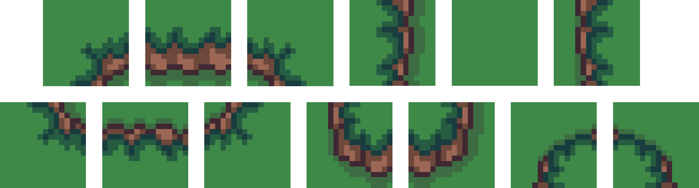
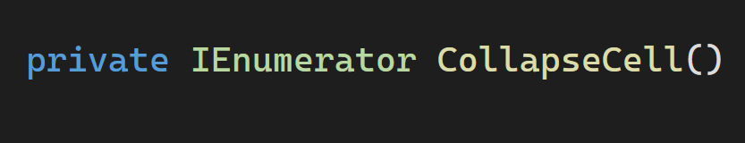
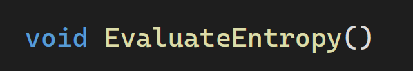
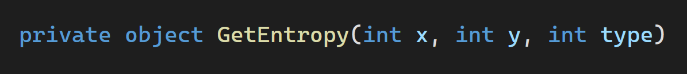
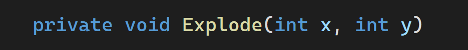
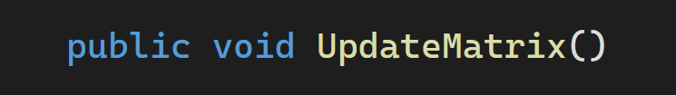
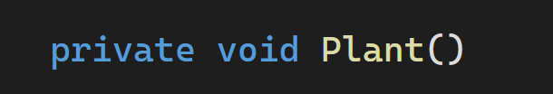

This project idea is to develop a procedural tilemap generator using the Wave Function Collapse (WFC) algorithm and Markov transition matrices. This approach enforces the creation of two-dimensional maps while ensuring that the selection of tiles follows specific adjacency rules. The system calculates probabilities for placing tiles based on their already defined neighbors, ensuring consistency and variation of the tilemap. The result is a functional tilemap ready to be used in games or other similar projects.
IMPLEMENTATION
The data structures I used include are: an array containing the different tiles, a matrix of ‘Cell’ objects representing the tilemap grid, the ‘Cell’ class that stores the assigned tile ID and the entropy of the cell, and four float matrices representing Markov transition matrices for each direction (top, bottom, left, right). These matrices hold the probabilities of each tile transitioning to an adjacent tile. You can see the tiles I have used and the four transition matrices in the images below.


Recursive method that starts the process of collapsing of the cells, use a Coroutine and calls EvaluateEntropy(), CollapseLowestEntropy() and UpdateMatrix(). After that, if there are no more cells to collaps, calls the plant() method, otherwise calls itself.

Method that calls the method GetEntropy() for each cells of the grid, if the entropy is zero, then calls the Explode() method for that specific cell. Last, calls the method UpdateMatrix().

Method that based on the type gives as parameter returns either an integer representing the entropy of a cell, or a float[] with the probabilities of collapsing a specific cell using Markov transition matrices.
Method that finally collapse one of the cell with the lowest entropy, normalize the probabilities returned from the GetEntropy() method and choose the appropriate tile based on the normalized probability.

method that handles cases of zero entropy by resetting the surrounding area of the grid.

Metodo that updates the tilemap based on the values of the grid.

Metodo that places prefabs to decorate the scene once the tilemap generation is completed.
DEMONSTRATION
Here we can see how the algorithm works. The numbers on the cells represent either the entropy of the cell or the index of the tile placed in that position, enclosed in square brackets.
And now we can see what it actually does on the tilemap. Every tiles placed respects the probabilities we defined. After all tiles have been placed, the function Plant() gets called, which adds some decorations to the tilemap.
CONCLUSION
The algorithm can of course be used to create way bigger tilemaps and the logic allows you add as many different tiles that you want, like water, mountains, villages and more. This might not be the most efficient way to implement procedural generation in 2D games, but I wanted to make something different using a more probabilistic approach using Markov Chains.